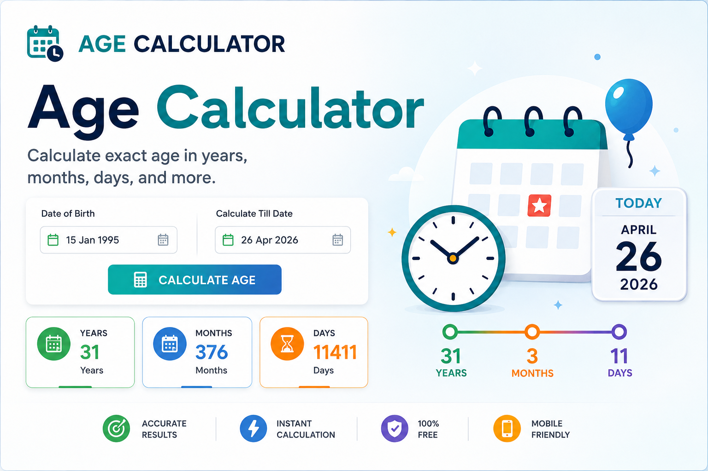
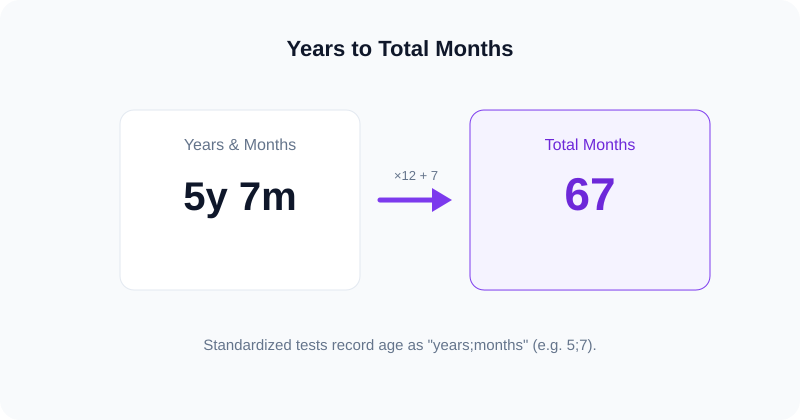

Free · No sign-up · Private
Chronological Age Calculator
This free chronological age calculator instantly tells you the exact time between any date of birth and a test date, broken down into years, months, and days — plus total months for assessments. Everything is calculated in your browser, so your data never leaves your device.
Key takeaways
- Chronological age is the exact amount of time that has passed since a person's date of birth.
- It is found by subtracting the date of birth from the test date in years, months, and days.
- This chronological age calculator also returns total months for standardized testing.
- The tool is free, private, and accurate to the day, including leap years.

What is chronological age?
Chronological age is the amount of time that has passed since a person's date of birth, measured against the calendar. Unlike biological age, which reflects the condition of the body, chronological age is fixed and objective: it only depends on two dates — when someone was born and the date you are measuring to. A chronological age calculator simply automates that subtraction so you get an exact, error-free answer in seconds.
In everyday life we round chronological age to whole years ("she's 11"). In clinical, educational, and research settings, however, the precise figure in years, months, and days matters a great deal, because test norms and developmental milestones are defined that finely.
How to use this chronological age calculator
- Enter the date of birth in the first field.
- Set the test date (the "age at this date" field). It defaults to today, but you can change it to any past or future assessment date.
- Read the result instantly: exact age in years, months, and days, plus total months, total weeks, total days, and a countdown to the next birthday.
- Copy, print, or share the result with one tap — useful for attaching to a test protocol or report.
How chronological age is calculated
Chronological age is calculated by subtracting the date of birth from the test date, one column at a time — days, then months, then years — borrowing where a column would go negative. For a full worked example by hand, see our guide on how to calculate chronological age.

The naive approach of dividing total days by 365 introduces errors because years are not all 365 days long. This calculator instead uses an exact calendar algorithm, so the months and days always line up with a real calendar.
Chronological age in years, months, and days
Standardized assessments almost always require age in the years;months format (for example, 5;7 means five years and seven months). This calculator displays that figure directly, along with total whole months — the number psychologists and speech-language pathologists copy onto a score sheet. If you only need the month figure, our dedicated age in months calculator focuses on exactly that.

Who uses a chronological age calculator?
- Speech-language pathologists (SLPs) and psychologists, to score normed assessments precisely. See our chronological age calculator for testing.
- Teachers and school staff, to confirm grade placement and eligibility cut-off dates.
- Pediatricians and parents of preterm infants, who also track corrected age.
- Researchers, who need participant ages reported to the month.
- Anyone curious about their exact age or asking "how old am I?"
Chronological vs biological vs corrected age
It helps to distinguish three related ideas:
| Type | What it measures | Changes with |
|---|---|---|
| Chronological age | Calendar time since birth | Only the passage of time |
| Biological age | Physiological condition of the body | Lifestyle, health, genetics |
| Corrected age | Chronological age minus prematurity | Gestational weeks at birth |
Curious how the calendar compares to your body's age? Read biological vs chronological age.
Accuracy, leap years & time zones
This chronological age calculator is accurate to the day. It correctly handles leap years (including February 29 birthdays) and the fact that months have 28—31 days. Because it works from calendar dates rather than timestamps, time zones do not affect the result. For official testing, always use the actual administration date as your test date.
For authoritative background on developmental milestones by age, see the U.S. CDC's milestone resources.
Related calculators & guides
How to Calculate Chronological Age
Step-by-step by hand, with the formula and examples.
Age in Months Calculator
Get chronological age in total months and days.
For Testing & SLP
Age in years;months for WISC, Brigance, ASQ and more.
Corrected Age Calculator
Adjusted age for premature babies.
Biological vs Chronological
Why your body's age can differ from the calendar.
Pearson Tool Explained
How it works and a free, private alternative.
Frequently asked questions
What is a chronological age calculator?
A chronological age calculator is a free online tool that works out the exact time between a date of birth and a chosen test date, expressed in years, months, and days. It removes the manual borrowing and regrouping that age math usually requires.
How do you calculate chronological age?
Chronological age is calculated by subtracting the date of birth from the test date, column by column (day, month, year), borrowing days and months where needed. The result is the person's exact age in years, months, and days.
Is this chronological age calculator free?
Yes. It is completely free, requires no sign-up, and runs entirely in your browser, so your date of birth is never sent to a server or stored.
Does the calculator give age in months for testing?
Yes. Alongside years-months-days, it shows total whole months and remaining days in the years;months format used by standardized tests such as the WISC, WAIS, Brigance, and ASQ.
Does it handle leap years correctly?
Yes. The calculator uses an exact calendar algorithm that accounts for leap years and the different number of days in each month, so the result is accurate to the day.
Can I calculate my age on a past or future date?
Absolutely. Change the "age at this date" field to any date and the tool will show the chronological age as of that date.